Variante B · Stilprototyp ToHuus Hub
Illustrativ und warm. Gezeichnete Federlinien mit Gouache-Flächen, Papierkorn, weiche Karten. Katze, Vogel und Topfpflanze als seltene Entdeckungen.
Familjen Grotesk (UI) · Bree Serif (Überschriften)
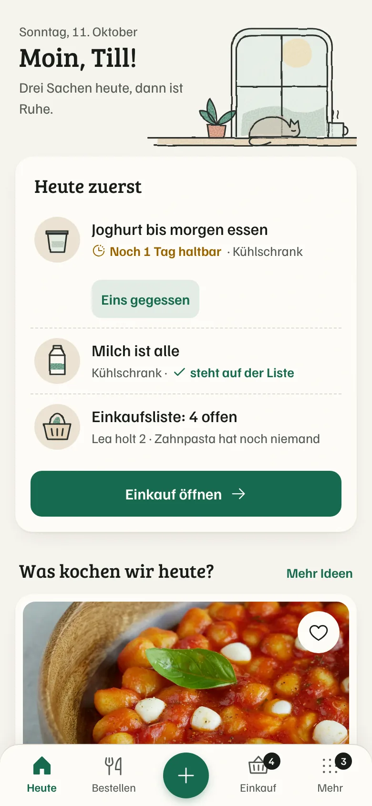
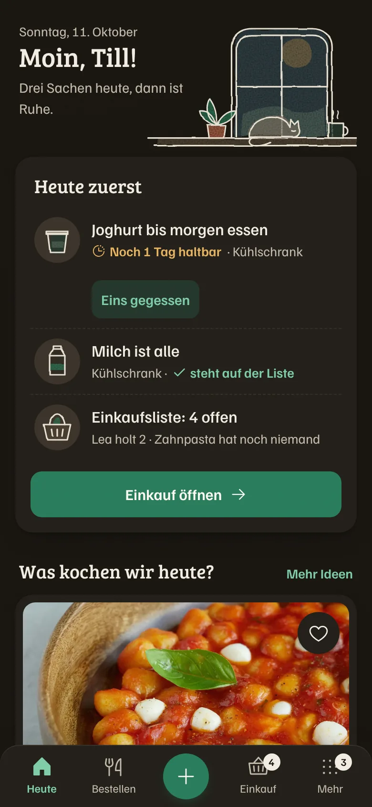
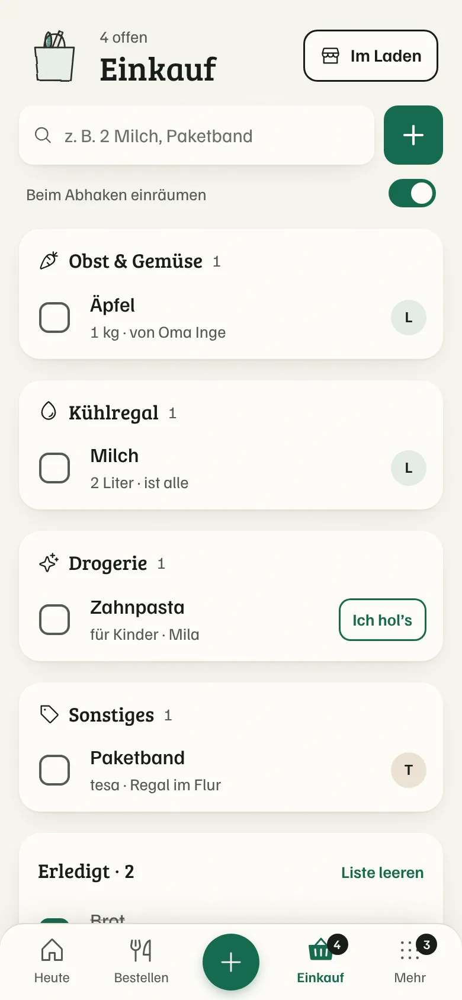
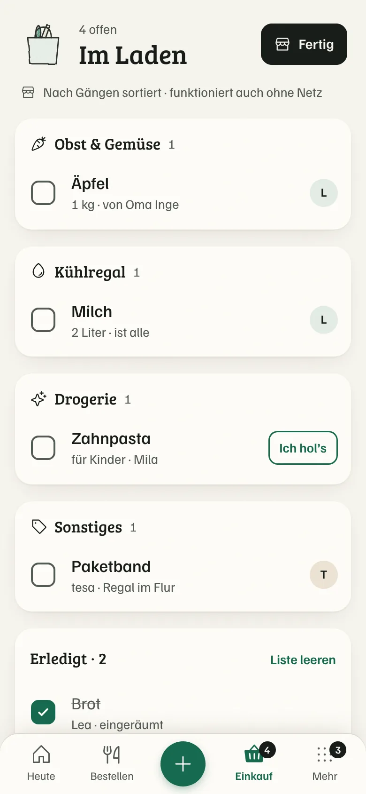
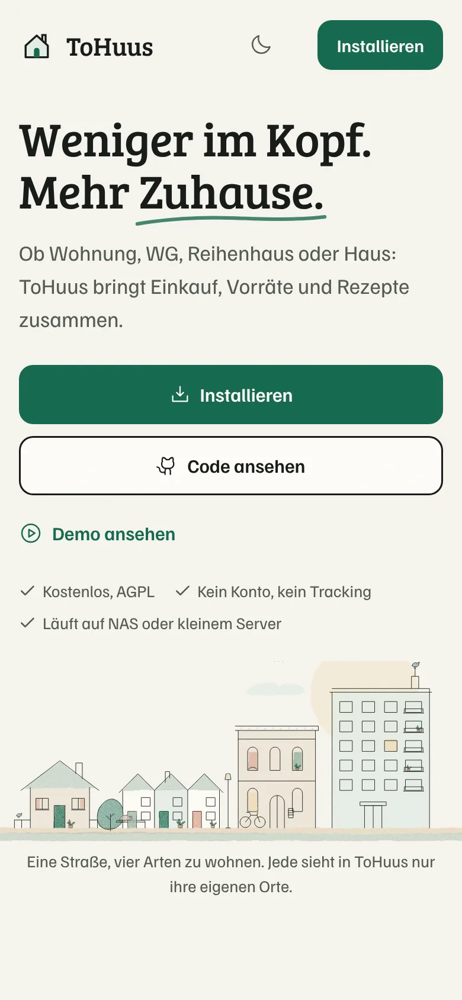
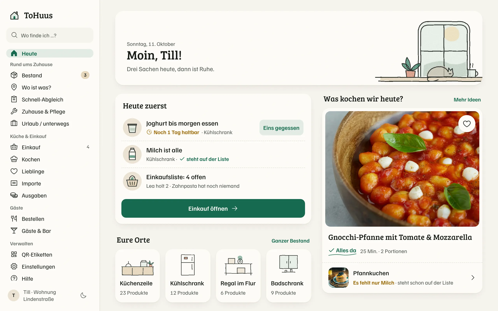
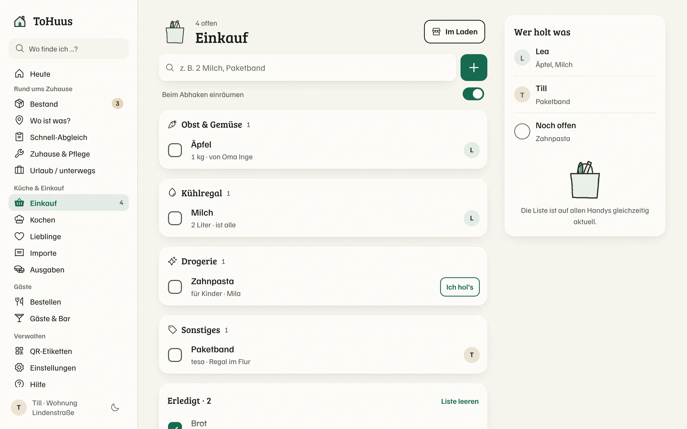
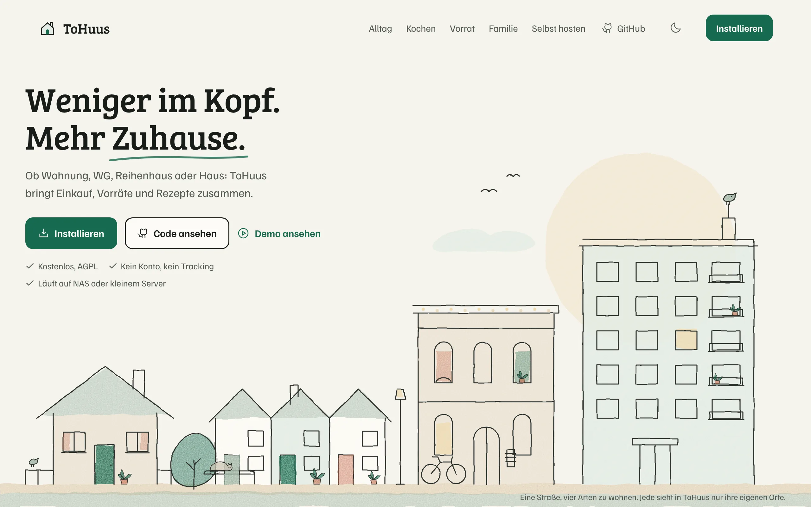
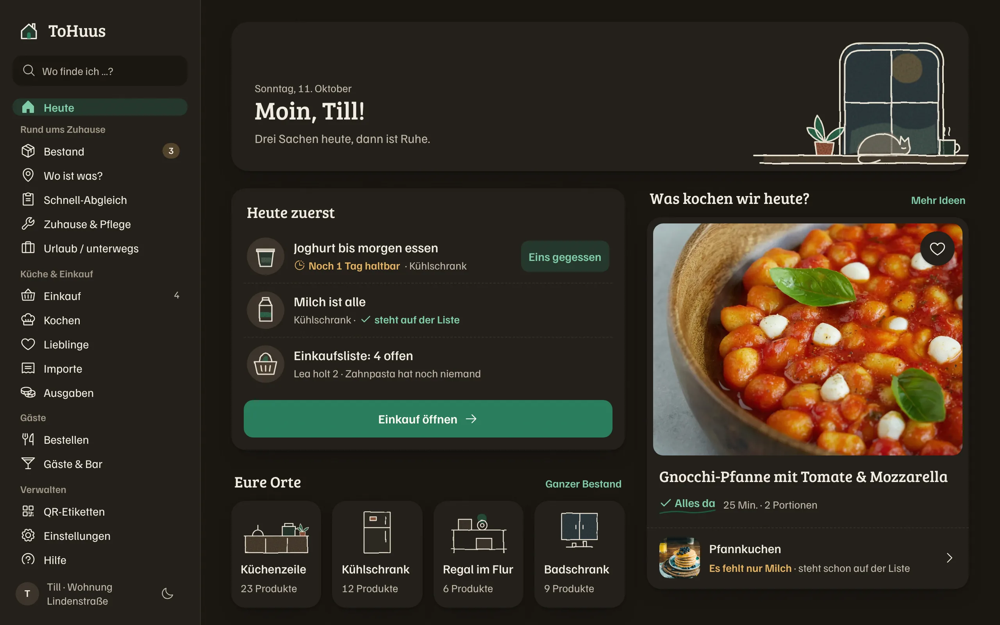
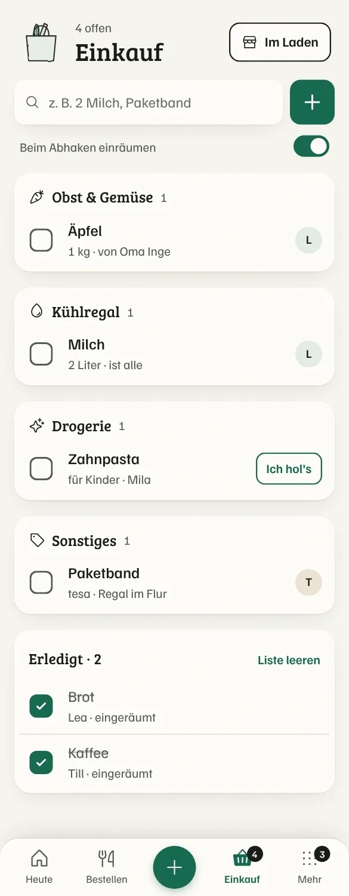
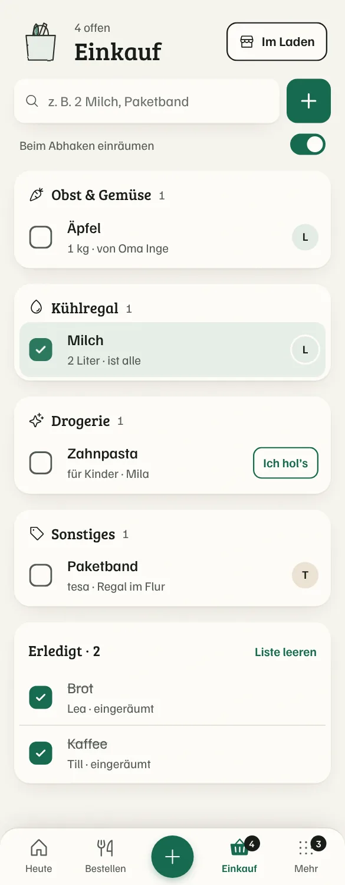
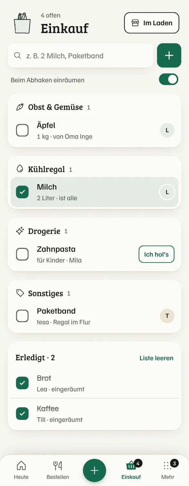
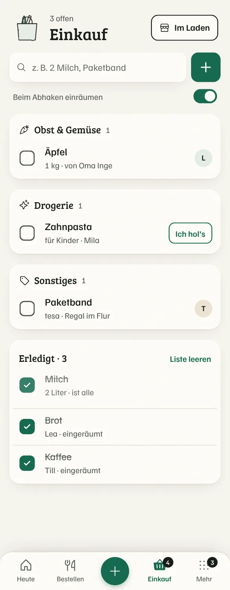
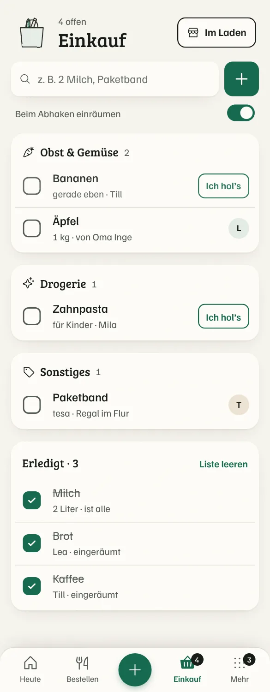
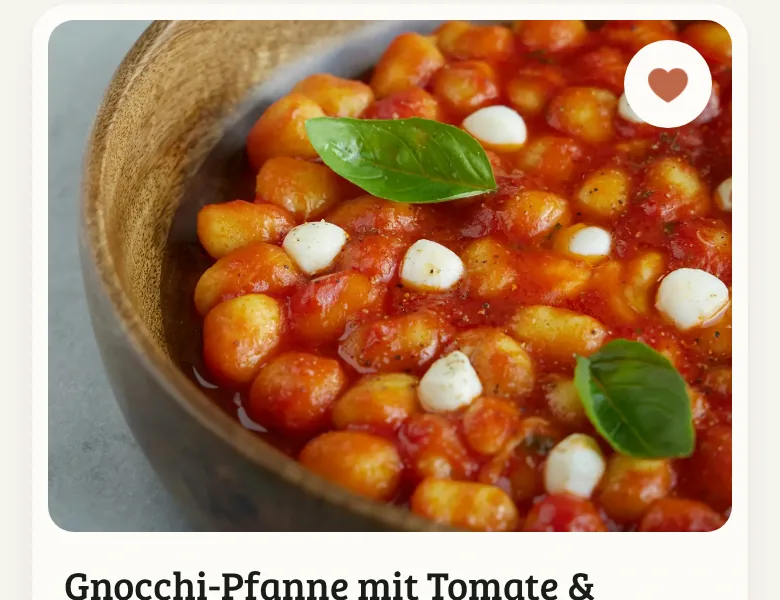
| Einkauf abgehakt | Haken 160 ms + Zeile 200 ms, cubic-bezier(.2,.7,.2,1) |
| Artikel hinzufügen | 210 ms, translateY 6 px → 0, Opacity |
| Rezept-Herz | 220 ms, scale 1 → 1,22 → 1, Herz gefüllt |
| Button gedrückt | 110 ms, scale 0,98 |
| Reduced Motion | keine Transforms, nur 120 ms Überblendung; Zustände bleiben sichtbar |
Weniger im Kopf. Mehr Zuhause.
Gnocchi-Pfanne mit Tomate & Mozzarella
Einkaufsliste · Gemeinsam abstimmen · Noch 3 Tage haltbar · Tiefkühlschrank · ÄÖÜ äöü ß 0123456789